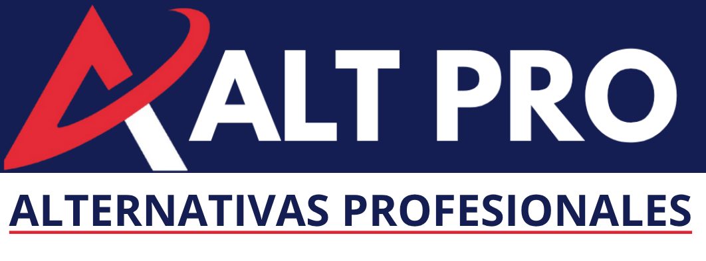

Capacitación tecnológica de vanguardia alineada a las demandas globales del futuro laboral.

"Preparando a los jóvenes para los empleos que pronto existirán."Capacitación tecnológica de vanguardia alineada a las demandas globales del futuro laboral.
LLMs, Prompt Engineering, ChatGPT, Gemini, Perplexity, DeepSeek, Copilot, Vocaroo, Google TTS, Suno, Netlify, Surge y Cloudflare Pages.
DALL-E 3, Leonardo AI, Gamma.app, Clipchamp, Descript, Meshy AI, Spline, Pika, Veo y videos de idiomas educativos.
Instalación de VS Code, HTML5, CSS3, JavaScript, asistentes de IA (Copilot/DeepSeek) y PWAs locales.
Landing pages, memoramas, calculadoras, CRM escolar, calendarios, quizzes, reproductores, tarjetas digitales, estación de radio web, video de idiomas, presentación en Gamma.app y PWA final desplegada.
R: Existen 2 formas:
a) Se les puede dar un curso a los maestros con un costo simbólico y además tendrán acceso a la plataforma todo el semestre, independientemente de que tomen este curso o no.
b) El curso está diseñado para ser autodidacta y los lleva paso a paso desde cero hasta terminarlo.
R: Ninguna. El Nivel 1 parte desde cero absoluto, guiando al alumno de usuario básico a creador de tecnología.
R: Cada alumno recibe un usuario y contraseña temporal inicial con vigencia estricta de 6 meses para proteger las licencias escolares.
R: Sí. Al aprobar las evaluaciones de cada etapa (con más del 70% de aciertos), el sistema emite diplomas institucionales nominativos en PDF. Además, durante el trayecto, los alumnos obtienen rutas para tramitar insignias y certificaciones internacionales oficiales de Cisco, Google Cloud, Microsoft y la Universidad de Helsinki.
R: El sistema permite que el alumno cambie su contraseña al ingresar por primera vez. En caso de extravío posterior, el colegio o el administrador puede solicitar el restablecimiento inmediato mediante los canales de soporte.
R: Al finalizar el curso, su hijo habrá generado diferentes proyectos como videos, canciones, imágenes, pero sobre todo aplicaciones tanto de entretenimiento como laborales. Puede ver el botón: "Demos del proyecto".
R: La plataforma es una herramienta de 24x7 durante todo el semestre.
R: Si el alumno termina antes, puede explorar, repasar y perfeccionar sus proyectos sin restricciones. Si por alguna razón no concluye a tiempo, se puede comunicar con su director para pedir una extensión del curso por el tiempo que ustedes lo consideren pertinente con el respectivo pago por mes.